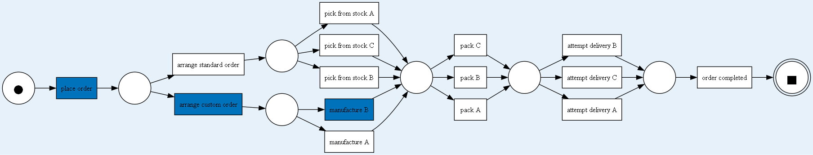

<!--
  Here is the case ID input page. Contains the case-selection form and the case-preview form. 
  If a case is chosen to be previewed, shows a table and a petr-net.
-->
{% extends 'base.html' %}

{% block head %}
<title>Case selection</title>
{% endblock %}

{% block body %}
<div class="contents" style="text-align: center;" class="custom-select" >

  Choose which case you want to optimize:
  <!-- This is the form for directly sending case ID to be processed by the agent. -->
  <form id="selectcaseid" method="post" name="selectresult">
    <select name="selectresult" id="caseSelect" method="get" form="selectcaseid">
      {% for id in selection %}
      <!-- case dropdown menu -->
      <option value="{{ id }}"> {{ id }} </option>
      {% endfor %}
    </select>

    <div style="text-align: center;">
      <!-- Submit button -->
      <button type="submit" class="button" form="selectcaseid" value="casevalue"> Optimize now!</button>
    </div>
  </form>

  Preview it before optimizing!
  <!-- The preview functionality. The dropdown menu is separate to avoid mixing the HTTP requests between both buttons. -->
  <form id="previewCaseForm" method="get" name="previewCase">
    <select name="selectpreview" id="previewSelect" method="get" form="previewCaseForm">
      {% for id in selection %}
      <!-- Dropdown selection -->
      <option value="{{ id }}" {% if id == previewid %} selected {% endif %}> {{ id }} </option>
      {% endfor %}
    </select>

    <div style="text-align: center;">
      <!-- The preview button -->
      <button type="submit" class="button" form="previewCaseForm" value="casevalue"> Preview this case! </button>
    </div>

    <div style="text-align: center;">
      <!-- The preview image -->
      {% if previewid or previewid == 0 %}
        <p>Previewing Case-ID: {{ previewid }}</p>
        <!-- The preview table when a case is selected -->
        <table>
          {{ state | safe }}
        </table>
        <!-- The preview image when a case is selected -->
        
      {% else %}
        <!-- no image -->
      {% endif %}
      <br>
    </div>
  </form>

</div>
{% endblock %}


